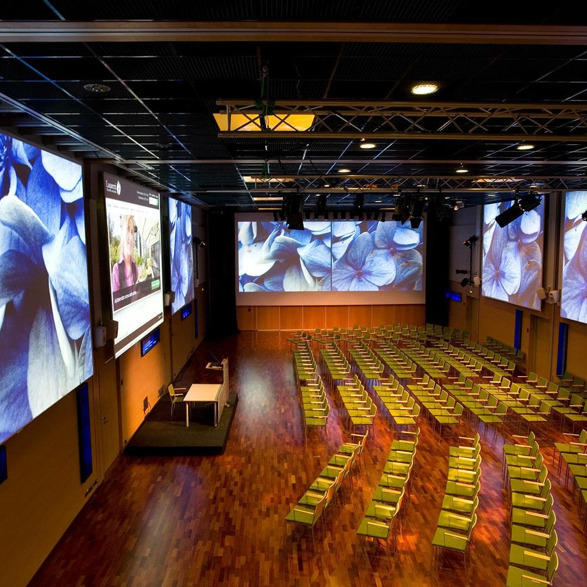

Conference Venue

Credits: Nordic Art Hotel Lasaretti
The Nordic Art Hotel Lasaretti is situated on the beautiful island of Lasaretinsaari, one of the most famous islands in the Oulu River.
Equipped with impressive presentation technology, the spacious Aurora Hall is a venue for grand occasions.
We have hosted conferences here with up to 200 participants, and the Hall also accommodates poster and demo sessions as well as industry stands.
In addition, we can utilise various 20-50 people cabinets and meeting rooms for workshops and smaller meetings.
The Hotel also delivers catering for the meetings.
The previous events we (the chairs) have successfully hosted on these premises include:
- The International Conference on Evaluation and Assessment in Software Engineering (EASE) in June 2023 (link)
- Arctic AI Days 2022 (link)
Close-by research institutions:
-
University of Oulu, Faculty of Information Technology and Electrical Engineering (link)
-
VTT Technical Research Centre of Finland in Oulu (link)
-
Oulu University of Applied Sciences (link)
Accomodation
Accommodation options, all in a short distance from the venue:
-
Scandic Oulu (link)
-
Sokos Hotel Oulu (link)
-
Lapland Hotels Oulu (link)
-
Radisson Blu (link)
-
Nordic Art Hotel Lasaretti (link)
-
Nallikari Holiday Village (cottages) (link)
Travel Information
Oulu airport is located 15 km from the city centre.
Finnair operates frequent daily direct flights between Oulu and Helsinki (approx. 1 hour), the main international hub in Finland.
There is also a train connection from Helsinki to Oulu.
The train travel time is approximately 6 hours, depending on the train, and overnight trains are also available with highly modern cabins.
Oulu railway station is located in the city centre and is within walking distance from the proposed conference venue.
Public transport in Oulu: The bus from the airport to the city centre takes 25-30 minutes.
Single tickets are available from the bus using cash (exact change), contactless payment cards, or the Oulu public transport ticket app.
A taxi ride from the airport to the city centre takes about 10 minutes.
Taxis can be booked online from various operators in advance.
Oulu is known as an excellent bicycle area, and various destinations can be reached by well-maintained bicycle lanes (however, November can already possess some ice on the roads).